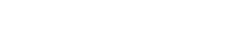

foto de campus · 3:2
Pasillo EDEM
Titular serif del artículo
Extracto en Archivo con el arranque del texto que invita a seguir leyendo en el visor.
Leer en el visor pág. 04
El diario de la escuela, entre número y número.
Se actualiza cada semana.
Todas las ediciones, de la primera a la última, colgadas como en el kiosko de toda la vida. Descuelga una y se abre en el visor con efecto papel.
Novedades
Sé el primero en enterarte: cada nueva edición de la revista, avisos del kiosko y contenidos sobre empresa más allá de los libros, directo a tu bandeja.
Al suscribirte aceptas la política de privacidad de EDEM.
Los materiales con los que se maqueta EDEM Times
Color, tipografía y componentes de la revista de EDEM Escuela de Empresarios, dentro del ecosistema Marina de Empresas. El primario teal · petróleo #008AAD es el color oficial extraído del logotipo; el resto de la paleta se deriva de él de forma armónica.
Empresarios formando a empresarios
Motivo náutico recurrente — remar, contracorriente, puerto, ancla. Único wordmark oficial aportado; no se ha redibujado ningún mark.

logo-lanzadera-white.png · 246×31Los tres se usan solo en blanco sobre fondo oscuro y se igualan por altura de caja (28 px en escritorio), que en estos ficheros coincide con la altura de las mayúsculas: pesan lo mismo aunque Lanzadera salga casi el doble de ancho. Ninguno se redibuja, se recolorea ni se estira. Originales de lanzadera.es y angelscapital.es; el de Lanzadera es el eslabón débil — a 28 px va casi a escala 1:1, así que conviene sustituirlo en cuanto haya un SVG.
La opción difícil
Empresarios formando a empresarios
EDEM Times tiene edición física en papel; la web replica la experiencia de lectura de un PDF maquetado. El cuerpo se compone en Archivo, una grotesca limpia con personalidad editorial, sobre fondo papel cálido.
Número 2 · Marina de Empresas
Extracto en Archivo con el arranque del texto que invita a seguir leyendo en el visor.